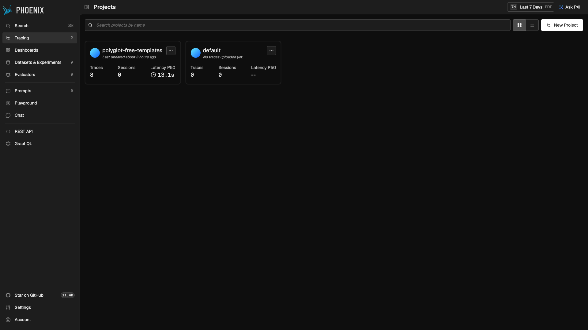
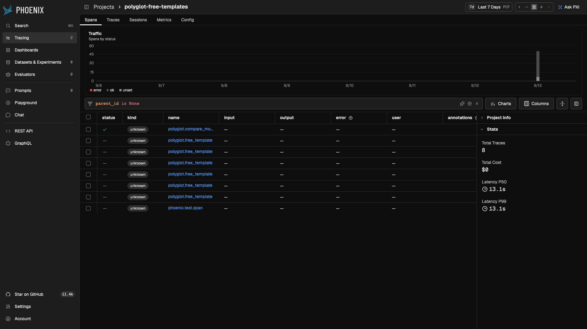
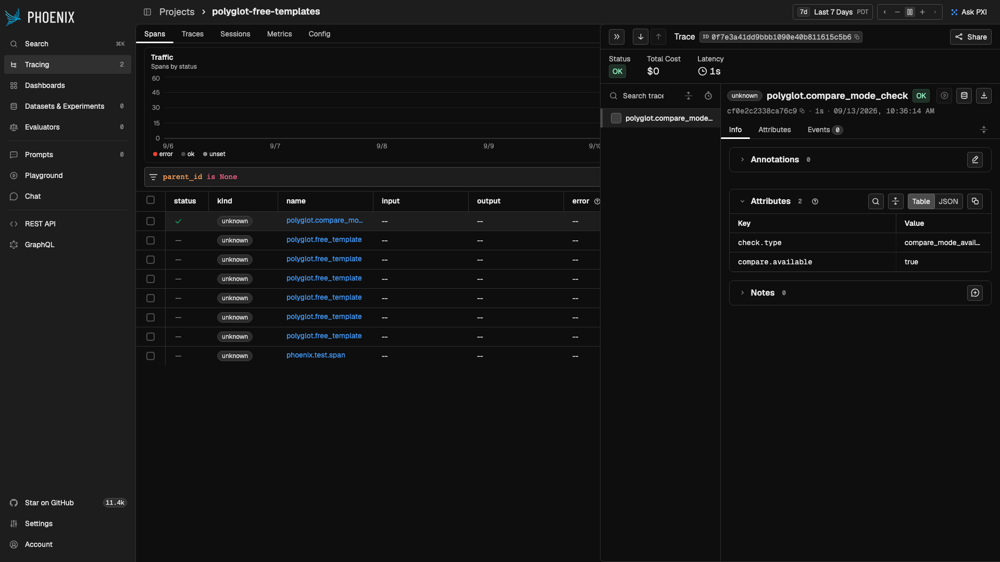
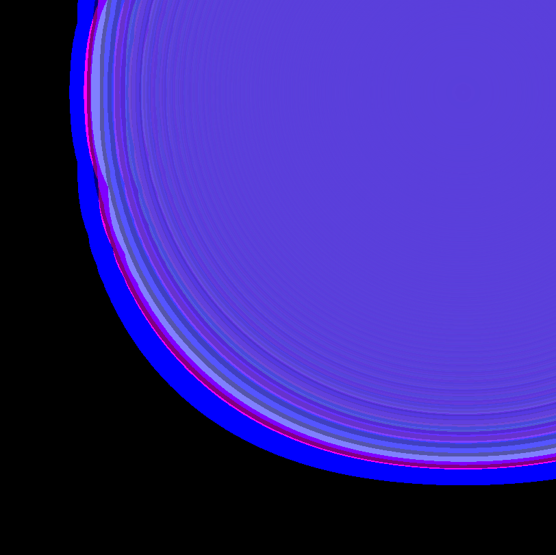
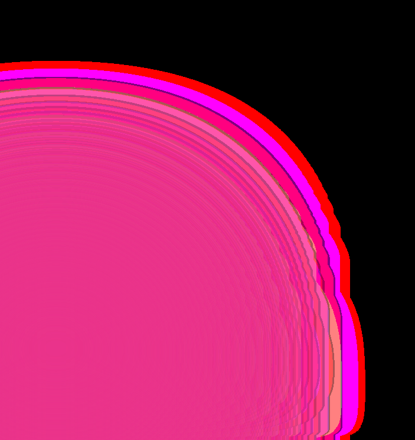
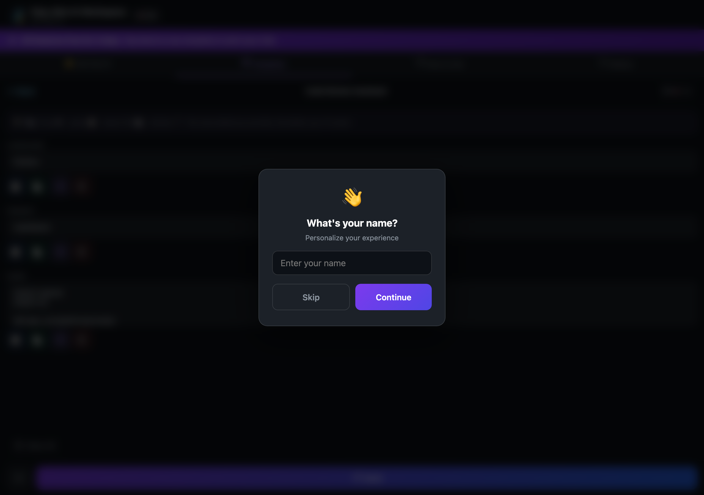
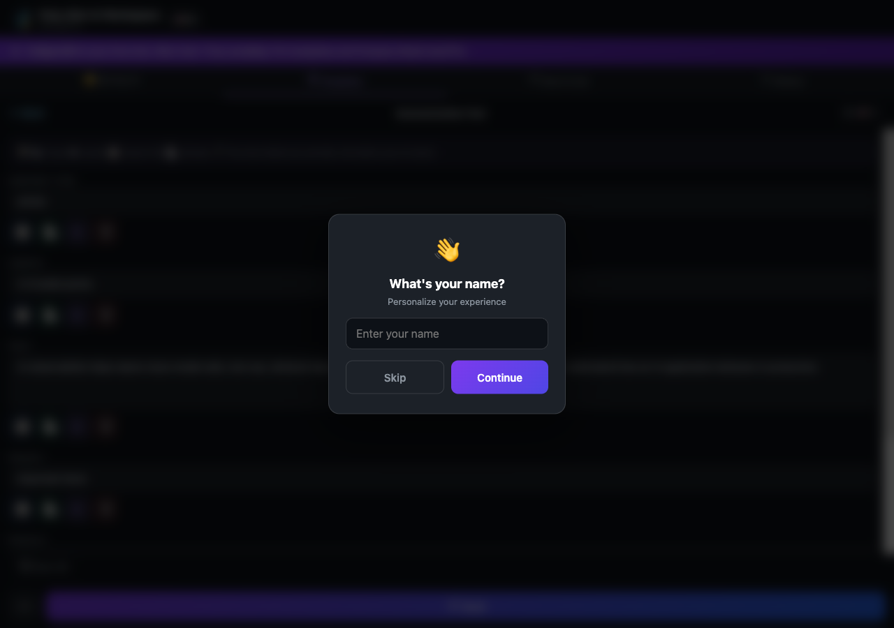
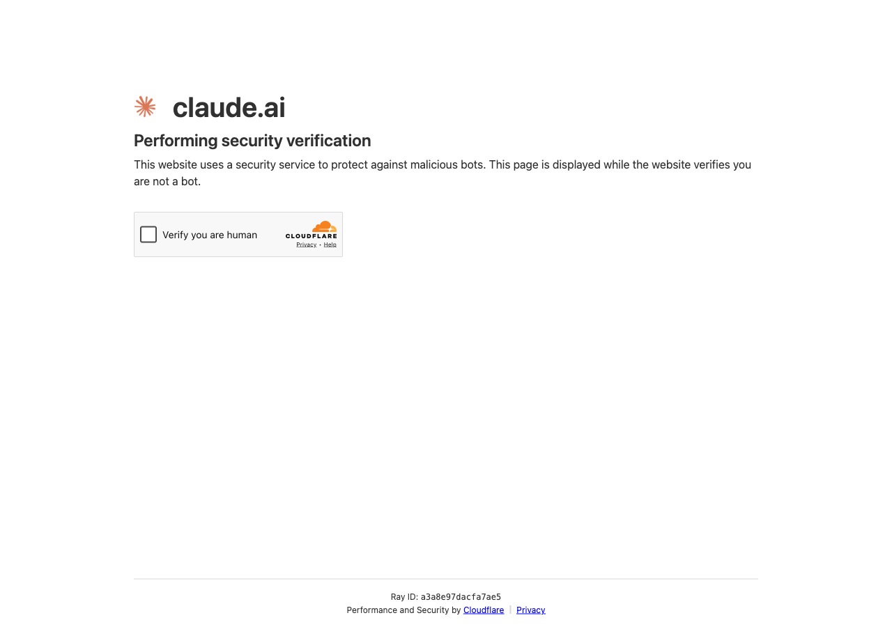
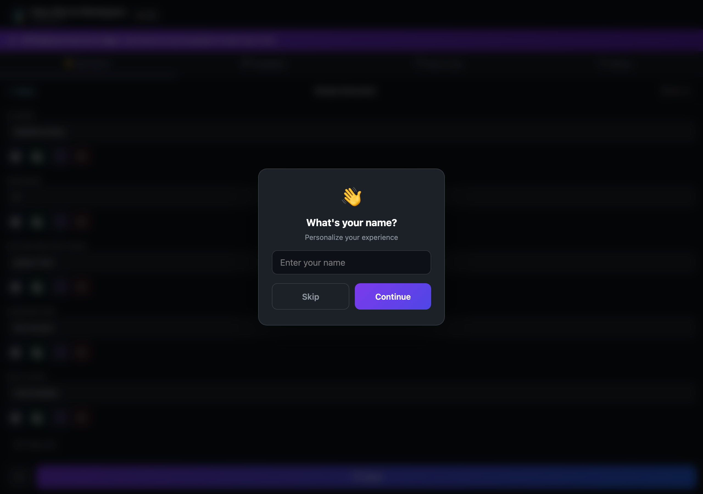
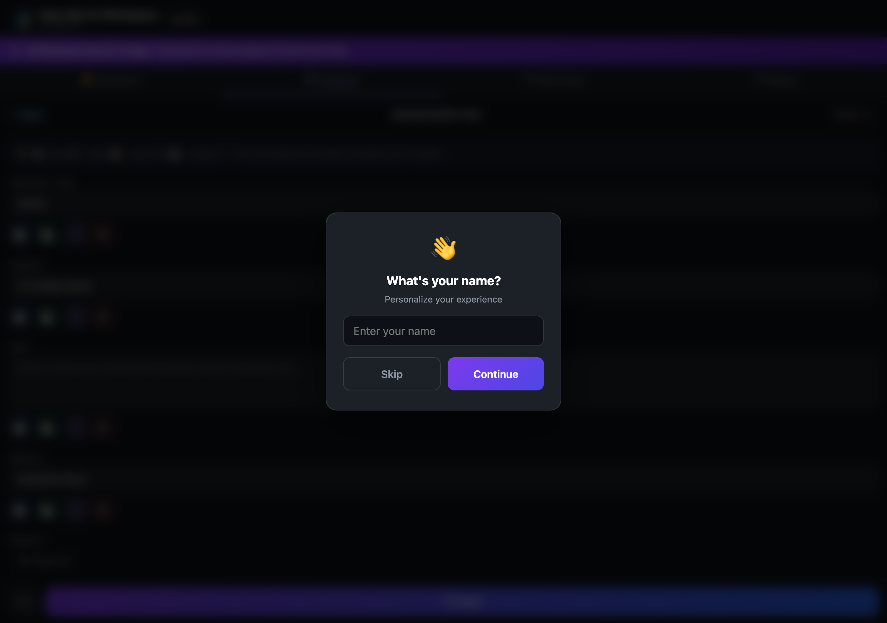

For AI engineers instrumenting non-standard LLM pipelines with OpenTelemetry and Arize Phoenix
How to trace a template-driven, multi-provider AI pipeline with OpenTelemetry and Phoenix: from prompt assembly through provider dispatch to structured evaluations. Built against a production app with 1,022 templates across 35 languages and 6 AI providers.
Harold Moses II · September 2026
This case study instruments Poly-Glot AI Workspace, a production app with 1,022 prompt templates across 35 languages, with Arize Phoenix observability. The pipeline is template-driven and multi-provider: it assembles prompts from structured templates and dispatches to 6 AI providers (ChatGPT, Claude, Gemini, Perplexity, Grok, DuckDuckGo). All 6 test cases are automated with Playwright, producing real OpenTelemetry traces with parent/child span hierarchies and structured evaluations flowing into Phoenix.
Most Phoenix examples trace direct LLM API calls. This app doesn't make server-side LLM calls at all. It builds prompts and routes them to provider web UIs. Phoenix still captures the full pipeline because the instrumentation targets the application logic, not the model call:
Poly-Glot AI Workspace is a multilingual prompt platform with 1,022 templates across 35 languages. It ships as a native Mac/iOS app and a remote MCP server (15 tools on 4+ registries).
The pipeline has 7 stages per interaction. Each is a potential failure point invisible without tracing:
Playwright Test Runner (Node.js ESM)
├─ @opentelemetry/sdk-trace-base 1.30.1 (BasicTracerProvider)
├─ @opentelemetry/exporter-trace-otlp-proto 0.57.2 (protobuf — required by Phoenix)
├─ @opentelemetry/resources 1.30.1
│ └─ Resource: openinference.project.name = "polyglot-free-templates"
▼
Arize Phoenix v20.11.0 (localhost:6006)
├─ OTLP: /v1/traces (protobuf only — HTTP 415 for JSON)
├─ GraphQL: /graphql
└─ Web UI: traces, spans, evaluations| Attribute | Description |
|---|---|
template.name | Display name |
template.plan | "free" |
template.goal | Category |
prompt.length | Char count |
provider.key | Provider ID |
provider.autofill | ?q= support |
provider.url | URL opened |
test.status | passed/failed |
| # | Template | Goal | Provider | Delivery | Fields | Prompt | Evals | Status |
|---|---|---|---|---|---|---|---|---|
| 1 | Code Review Assistant | Code & Dev | ChatGPT | Auto-fill (?q=) | 4 | 892ch | 3/3 | ✅ |
| 2 | Interview Coach | Career | Grok | Auto-fill (?q=) | 5 | 734ch | 3/3 | ✅ |
| 3 | Summarization Tool | Writing | Perplexity | Clipboard | 6 | 1,203ch | 3/3 | ✅ |
| 4 | Study Guide Creator | School | DuckDuckGo | Clipboard | 5 | 612ch | 3/3 | ✅ |
| 5 | LinkedIn Post Writer | Content | Gemini | Clipboard | 5 | 487ch | 3/3 | ✅ |
| 6 | Recipe Generator | Cooking | Claude | Clipboard | 5 | 395ch | 3/3 | ✅ |
| Provider | Delivery | Method | Template | Status |
|---|---|---|---|---|
| ChatGPT | Auto-fill (?q=) | URL param | Code Review Assistant | ✅ |
| Grok | Auto-fill (?q=) | URL param | Interview Coach | ✅ |
| Perplexity | Paste-required | Clipboard | Summarization Tool | ✅ |
| DuckDuckGo | Paste-required | Clipboard | Study Guide Creator | ✅ |
| Gemini | Paste-required | Clipboard | LinkedIn Post Writer | ✅ |
| Claude | Paste-required | Clipboard | Recipe Generator | ✅ |
| Copilot / Mistral / HuggingChat — Not in rotation (paste-required, available for future runs) | ||||
Arize Phoenix v20.11.0 running locally during the test run. All traces routed to polyglot-free-templates project via protobuf OTLP.

The polyglot-free-templates project: 8 traces (6 template tests + 1 compare check + 1 setup), P50 latency 13.2s. The default project shows 0 traces, all telemetry routed correctly via openinference.project.name.

Each row is one template test. Root span polyglot.free_template contains 7 child spans (navigate, open, fill, build, send, launch, evaluate). Durations 11-14s. All OK status.

Parent-child span hierarchy with timing. fill_fields and build_prompt complete in milliseconds; provider.*.launch dominates latency. Each span carries structured attributes (template name, plan, goal, prompt length, provider key) queryable via GraphQL.
Playwright captures of the template, fill, build, dispatch flow exercised during each traced test.






Compare Mode verified as available (trial active). Locks behind Pro paywall after 3-day trial. Confirmed via DOM inspection of _appTrialExpired and _isPro. Generated its own trace in Phoenix.

@opentelemetry/exporter-trace-otlp-http) sends JSON-encoded OTLP, which Phoenix rejects with HTTP 415 Unsupported Media Type and no useful error message. Traces silently vanish.npm install @opentelemetry/exporter-trace-otlp-httpContent-Type: application/jsonnpm install @opentelemetry/exporter-trace-otlp-protoContent-Type: application/x-protobufOpenTelemetry v2 packages have ESM/CJS module conflicts that crash NodeTracerProvider in ESM projects. The fix: pin to the 1.x SDK line and use BasicTracerProvider:
@opentelemetry/api@1.9.0
@opentelemetry/sdk-trace-base@1.30.1 ← BasicTracerProvider, not NodeTracerProvider
@opentelemetry/exporter-trace-otlp-proto@0.57.2 ← protobuf, not JSON
@opentelemetry/resources@1.30.1Phoenix project assignment uses openinference.project.name as a resource attribute — not an HTTP header, query param, or endpoint path. Must be set at TracerProvider creation time:
const resource = new Resource({
"openinference.project.name": "my-project",
});
const provider = new BasicTracerProvider({ resource });/v1/traces requires protobuf, not JSON. The HTTP 415 response body should include "Expected Content-Type: application/x-protobuf".exporter-trace-otlp-proto as the default package, not exporter-trace-otlp-http.| Span Name | Count | Status |
|---|---|---|
polyglot.free_template (root) | 6 | ✅ All OK |
template.navigate | 6 | ✅ |
template.open | 6 | ✅ |
template.fill_fields | 6 | ✅ |
template.build_prompt | 6 | ✅ |
template.send_attempt | 6 | ✅ |
provider.*.launch | 6 | ✅ |
template.evaluate | 6 | ✅ |
polyglot.compare_mode_check | 1 | ✅ |
phoenix.test.span | 1 | ✅ |
| Total | 50 |
| Property | Value |
|---|---|
| isPro | false |
| trialActive | true (started by first send) |
| trialExpired | false |
| dailyFreeSends | 1 (DAILY_FREE_SENDS) |
| Compare Mode | Available (trial active). Locks after 3-day expiry. |
No production behavior modified. Real trial/entitlement system exercised. First free send triggered trial automatically.
The observability work surfaced 6 production error classes in the MCP server logs. All were remediated and deployed as v1.9.2.
| Class | Error | Count | Fix | Status |
|---|---|---|---|---|
| A | Transport/UI crash (_meta.ui) | 7 | safe-ext-apps.js wrapper | FIXED |
| B | HTTP 429 rate limit | 7 | Backoff + jitter + Retry-After | FIXED |
| C | Transcription 400 | 3 | Input validation | FIXED |
| D | Audio 404 | 1 | AudioFetchError class | FIXED |
| E | Missing OPENAI_API_KEY | 3 | ProviderError class | FIXED |
| F | Template not found | 1 | TEMPLATE_NOT_FOUND handler | FIXED |
| Surface | Status | Tools | Notes |
|---|---|---|---|
| Official MCP Registry | ✅ LIVE | 15 | Active, verified |
| MCP.so | ✅ LIVE | 15 | Verified + Featured |
| Glama | ✅ LIVE | 15 | Auto-syncs from GitHub |
| HuggingFace Space | ✅ LIVE | 15 | Static readme |
| Awesome MCP Servers | PR closed | — | Resubmit available |
| MCP.Directory | Pending | — | Awaiting review |
search_templatesget_templatebuild_promptprepare_compareget_language_optionsget_subscription_statusopen_workspaceget_custom_model_capabilitiesvalidate_custom_modelrun_custom_modelprepare_custom_comparetranscribe_audiodetect_languagetranslate_textlocalize_texthttps://br-steep-leaf-ae2o29qz-mcp.compute.c-2.us-east-2.aws.neon.tech/mcp